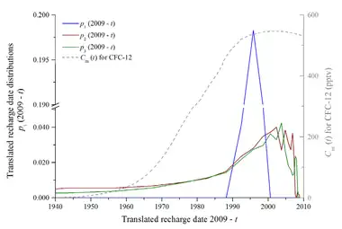
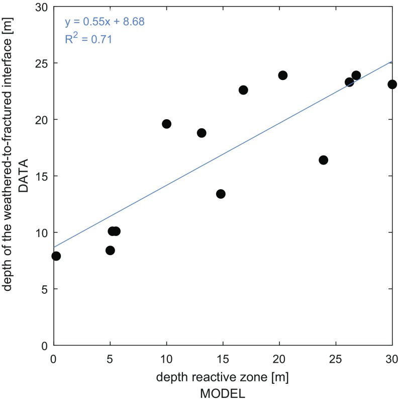
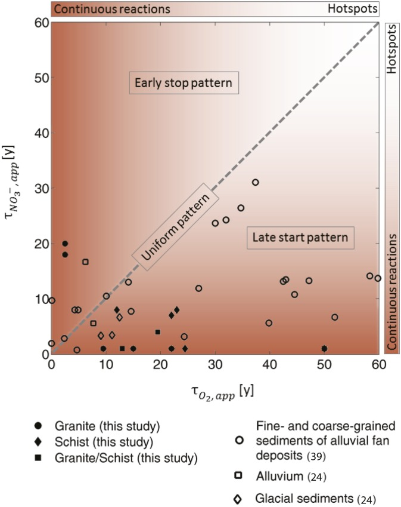
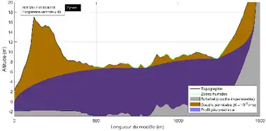
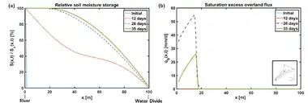
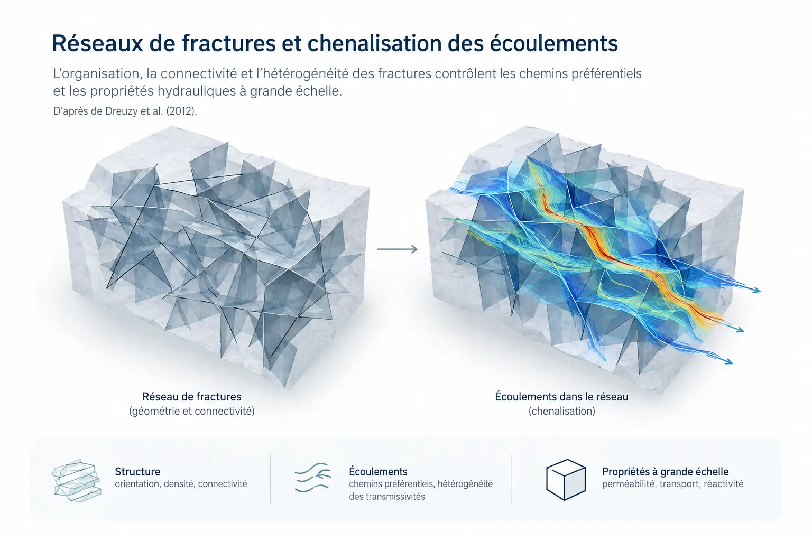
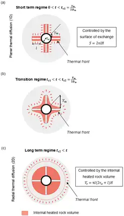
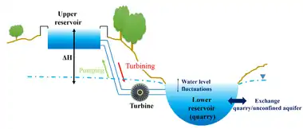

Galerie de figures
Une sélection de figures récupérées dans les publications, présentations scientifiques et documents de recherche correspondant aux principaux axes de recherche. Aucune illustration générée ou reconstruite spécifiquement pour le site n’est utilisée ici.
Aquifères peu profonds et bassins versants de tête
Des observations spatiales du réseau hydrographique à l’estimation des propriétés hydrauliques des aquifères peu profonds.

Calibrer les propriétés hydrauliques à partir du réseau hydrographique
Le réseau simulé issu du modèle d’écoulement est comparé au réseau observé pour contraindre les propriétés hydrauliques à l’échelle du bassin versant.
Abhervé et al., Hydrology and Earth System Sciences, 2023, Fig. 1 · CC BY 4.0.

Comparer réseaux observé et simulé
La distance entre les réseaux et la distribution spatiale des zones de suintement fournissent des métriques de calibration liées aux interactions nappe–rivière.
Abhervé et al., Hydrology and Earth System Sciences, 2023, Fig. 2 · CC BY 4.0.

Changer d’échelle et de contexte géologique
Les bassins pilotes de Bretagne et de Normandie permettent de tester la transférabilité de l’approche dans des contextes lithologiques contrastés.
Abhervé et al., Hydrology and Earth System Sciences, 2023, Fig. 3 · CC BY 4.0.
Temps de transfert, qualité de l’eau et réactivité
Comment l’organisation verticale de l’aquifère, les temps de transfert et les zones réactives contrôlent-ils la qualité de l’eau ?

Suivre la réorganisation des temps de transfert sous pompage
À Ploemeur, les distributions de dates de recharge évoluent rapidement au démarrage du pompage puis tendent vers un nouveau régime stable ; les traceurs CFC permettent d’en suivre la dynamique.
Leray et al., Journal of Hydrology, 2014 · figure récupérée dans la notice de travaux.

Stratifier la réactivité en profondeur
Le cadre conceptuel distingue les organisations verticales de la réactivité et montre pourquoi la position des horizons réactifs importe autant que leur intensité.
Kolbe et al., Proceedings of the National Academy of Sciences, 2019, Fig. 1.

Relier structure de l’aquifère et élimination des nitrates
Les observations et les modèles mettent en évidence le rôle déterminant de la distribution verticale des zones réactives dans le devenir des nitrates.
Kolbe et al., Proceedings of the National Academy of Sciences, 2019, Fig. 2.

Passer de la réactivité locale au fonctionnement du bassin
La distribution de la réactivité dans le sous-sol modifie la part de nitrate éliminée avant que les eaux souterraines ne rejoignent les cours d’eau.
Kolbe et al., Proceedings of the National Academy of Sciences, 2019, Fig. 3.
Ressources en eau dans un environnement changeant
Du fonctionnement des aquifères à leur suivi et à leur projection à grande échelle.

Relier topographie et surface de la nappe sur le littoral normand
À Bréville-sur-Mer, la position de la nappe par rapport à la topographie met en évidence les secteurs potentiellement sensibles aux remontées de nappe.
RIVAGES Normands 2100 · figure récupérée dans la notice de travaux.

AquiFR : représenter les grands processus hydrologiques
La plateforme articule recharge, écoulements souterrains, cours d’eau et échanges nappe–rivière pour suivre les ressources en eau souterraine en France.
Vergnes et al., Hydrology and Earth System Sciences, 2020, Fig. 1 · CC BY 4.0.

Déployer la modélisation des ressources à l’échelle nationale
La diversité des grands aquifères français impose de combiner plusieurs modèles et conceptualisations hydrogéologiques au sein d’une même plateforme.
Vergnes et al., Hydrology and Earth System Sciences, 2020, Fig. 3 · CC BY 4.0.

Assembler des modèles régionaux et karstiques dans une même plateforme
La carte rassemble les aquifères multicouches régionaux et les systèmes karstiques simulés, avec des modèles issus de plusieurs institutions et adaptés à des contextes géologiques différents.
Vergnes et al., Hydrology and Earth System Sciences, 2020, Fig. 4 · CC BY 4.0.
Modélisation et outils numériques
Des méthodes de calcul aux workflows reproductibles permettant de déployer les modèles sur de nombreux bassins.

Déclencher les flux de surface par saturation de la nappe
Dans un versant convergent, l’extension de la zone saturée contrôle l’apparition du ruissellement ; cette transition surface–subsurface reste spatialement très localisée.
Marçais et al., 2017 · figure récupérée dans la notice de travaux.

Coupler plusieurs codes hydrogéologiques dans AquiFR
Le schéma décrit la chaîne SAFRAN–SURFEX puis l’intégration, via OpenPALM, des différents modèles d’aquifères et de systèmes karstiques à un pas de temps quotidien.
Vergnes et al., Hydrology and Earth System Sciences, 2020, Fig. 2 · CC BY 4.0.

HydroModPy : organiser un workflow hydrogéologique complet
Extraction du bassin, préparation des données, paramétrisation, calcul, sorties et calibration sont réunis dans une chaîne reproductible.
Gauvain et al., Hydrology and Earth System Sciences, 2026, Fig. 1 · CC BY 4.0.

Du terrain au modèle de bassin versant
Le bassin du Nançon illustre le passage de la topographie et des données disponibles à la conceptualisation, la discrétisation et la simulation.
Gauvain et al., Hydrology and Earth System Sciences, 2026, Fig. 2 · CC BY 4.0.

Déployer les modèles dans des contextes variés
Les applications couvrent la gestion des ressources, la compréhension des processus et le développement méthodologique dans plusieurs contextes hydrogéologiques.
Gauvain et al., Hydrology and Earth System Sciences, 2026, Fig. 3 · CC BY 4.0.
Milieux fracturés, hétérogénéité et changement d’échelle
Des premières simulations de réseaux 2D aux réseaux 3D hétérogènes et aux applications énergétiques en milieu fracturé.

Écoulement dans les réseaux de fractures 2D
Cette figure ancienne montre la forte localisation des écoulements dans quelques chemins connectés au sein d’un réseau de fractures beaucoup plus dense.
Présentation Erhel, de Dreuzy & Davy, 2004 ; travaux associés dans Water Resources Research, 2000–2001.

Connectivité, hétérogénéité et chenalisation des écoulements
Le réseau de fractures (haut) et les écoulements correspondants (bas) montrent comment connectivité et hétérogénéités d’ouverture concentrent les flux dans un petit nombre de chemins préférentiels.
Illustration de synthèse d’après de Dreuzy, Méheust & Pichot, Journal of Geophysical Research: Solid Earth, 2012.

Stockage thermique dans la roche fracturée
Le dispositif à forage central et rainures radiales permet d’identifier des régimes de transfert et de stockage thermique contrôlés par la géométrie des surfaces d’échange et le volume de roche accessible.
de La Bernardie, de Dreuzy, Bour & Lesueur, Geothermics, 77, 130–138 (2019) · DOI 10.1016/j.geothermics.2018.08.010 · figure récupérée dans la notice de travaux.

Stocker l’énergie dans des carrières ennoyées
Le principe du PHES utilise une carrière abandonnée comme réservoir inférieur ; les cycles de pompage et de restitution interagissent avec l’aquifère environnant.
Poulain, de Dreuzy & Goderniaux, Journal of Hydrology, 559, 1002–1012 (2018) · DOI 10.1016/j.jhydrol.2018.02.025 · figure récupérée dans la notice de travaux.